Facilities
-
Library & Book Fair:
The library is equipped with all different books varying from story books, novels, poetry, art books to subject books, encyclopedia, latest magazines and newspaper.
Every year, Tagore Academy organizes the Book Fair to give denizens a glimpse of the world of literature. Last year (2023) was the 37th Jamshedpur Book Fair organized at the grounds of the school from 24th Nov, 2023 to 3rd Dec, 2023. The 2023 edition of Jamshedpur Book Fair witnessed the participation of more than 70 publications from across the country. The publications covered varied subjects and interests written in Hindi, English, Bengali, and other languages. Around 200 stalls were set up at the fair.
The Jamshedpur Book Fair organized by Tagore Society has become like a much-looked-forward-to festive occasion and it has recharged book lovers' interests and continues to be responsible for the gradual resurgence of book reading inclinations. In the year 2022, people spent nearly Rs One crore on book purchases at this Jamshedpur Book Fair, surpassing the wildest expectations which indicates that people's love and enthusiasm for books remain strong even in this digital age. Even seminars and debates were organized to enhance people's interest in books.
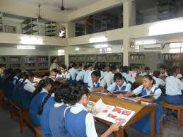 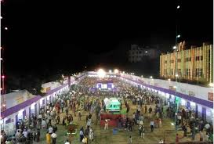 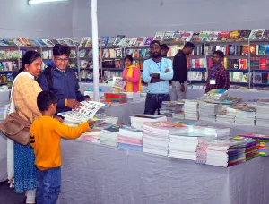 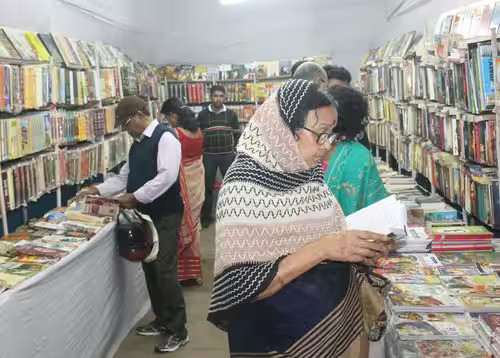 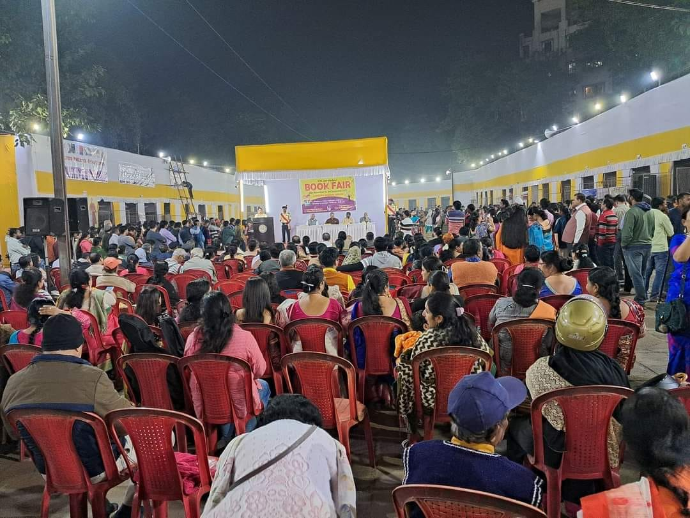
-
Auditorium:
The school has a big auditorium which is used for competitions, different functions ( like Prize Night, Rabindranath Tagore Celebration) and public events.
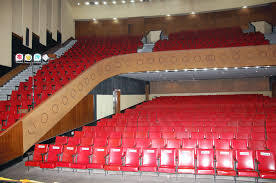 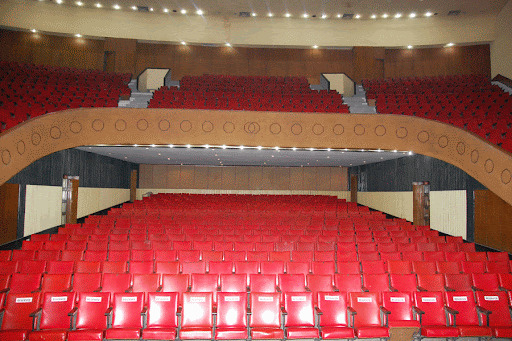 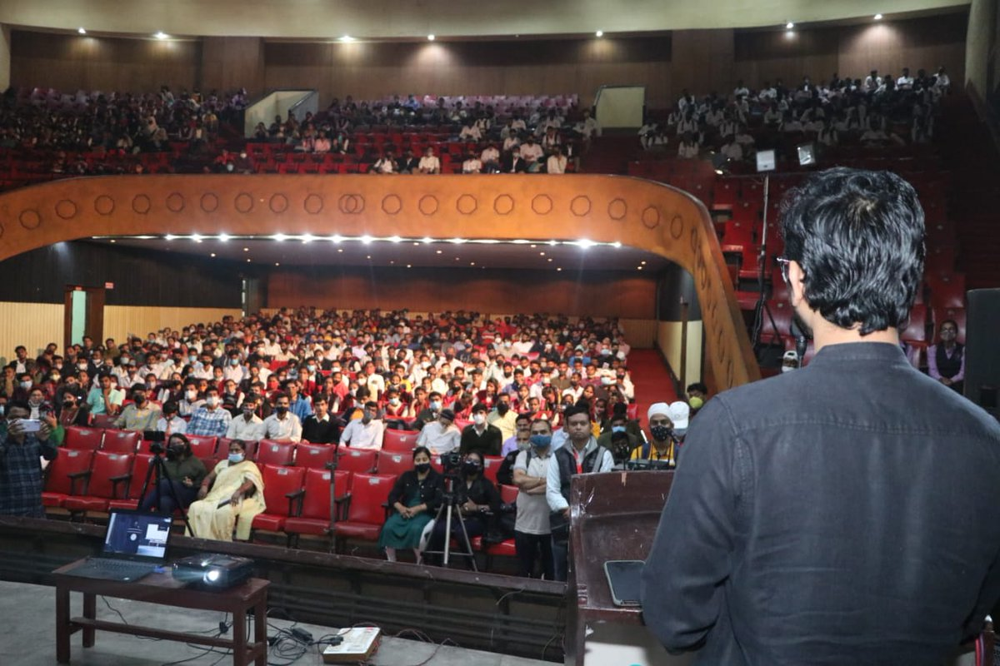
-
Sports:
The school has both indoor and outdoor games.
Indoor games include Carrom and Chess.
Outdoor games include VolleyBall, HandBall, FootBall, Cricket.
-
Extracurricular Activities:
Tagore Academy is also known as Tagore School of Arts or Rabindra Bhavan. After the classes, in the evening, different classes are held. Even workshops are held to attract and increase people's interest. The classes include:
- Fine Arts
- Rabindra Sangeet
- Classical Vocal
- Nazrul Geeti
- Dance- Bharat Natyam, Kathak, Odissi
- Decorative Arts and Crafts
- Guitar (Classical & Western)
- Synthesizer
- Tabla
- Recitation
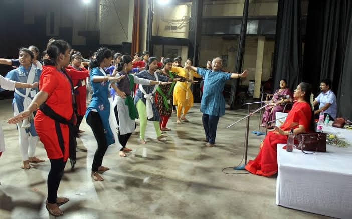 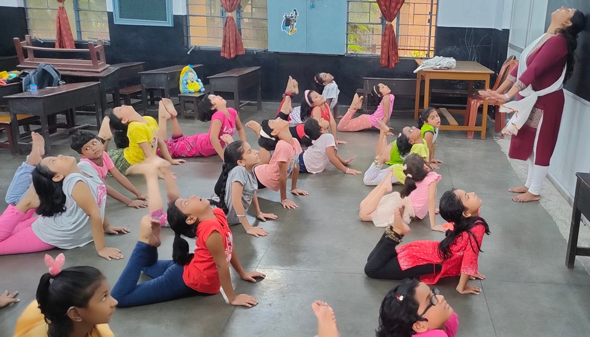 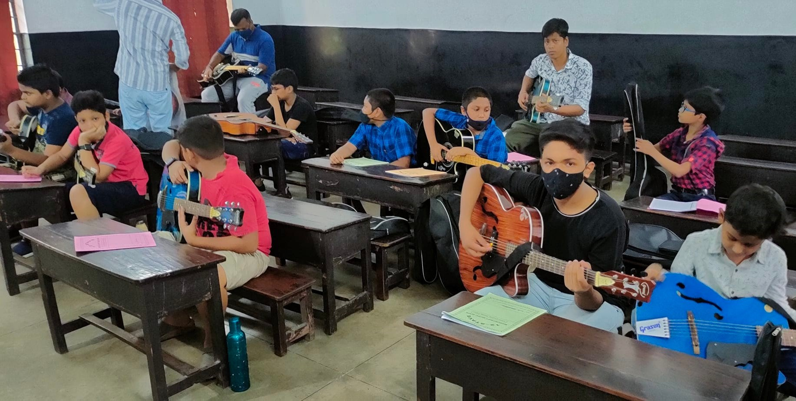 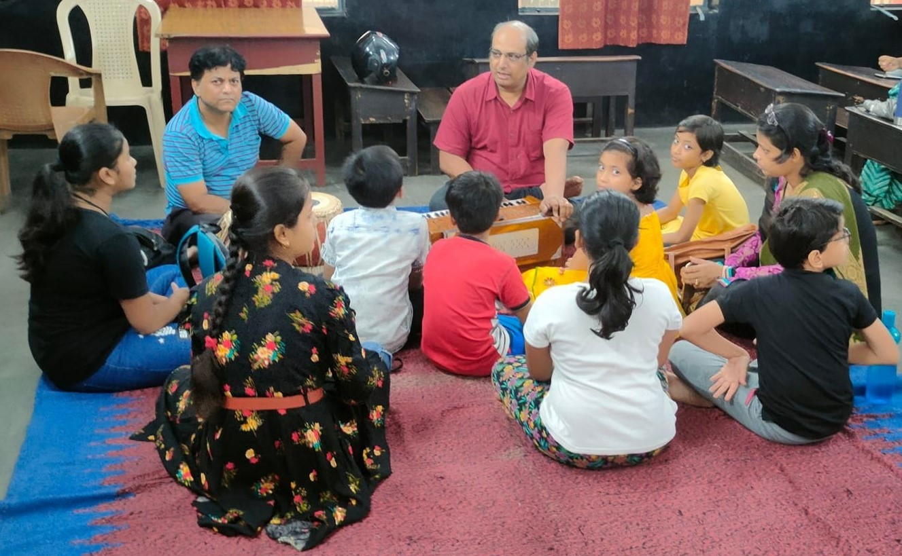
Different competitions like All Jharkhand Music Competition or Inter-School Quiz/Debate/others Competitions are also organized.
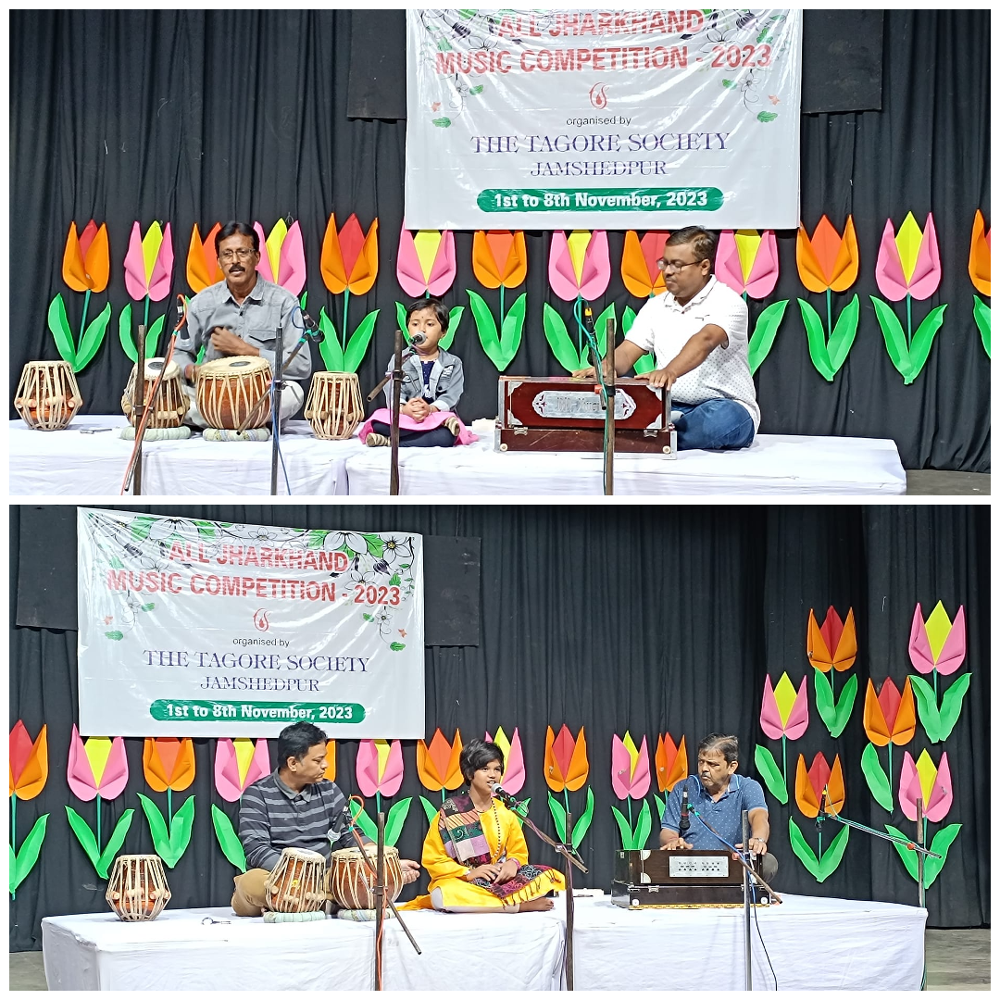 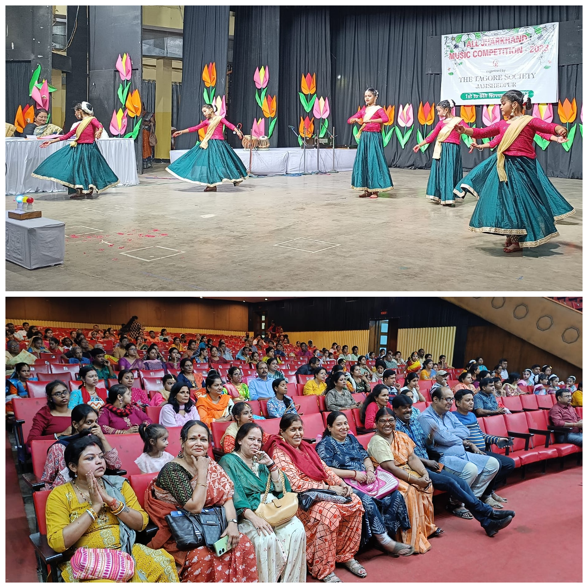 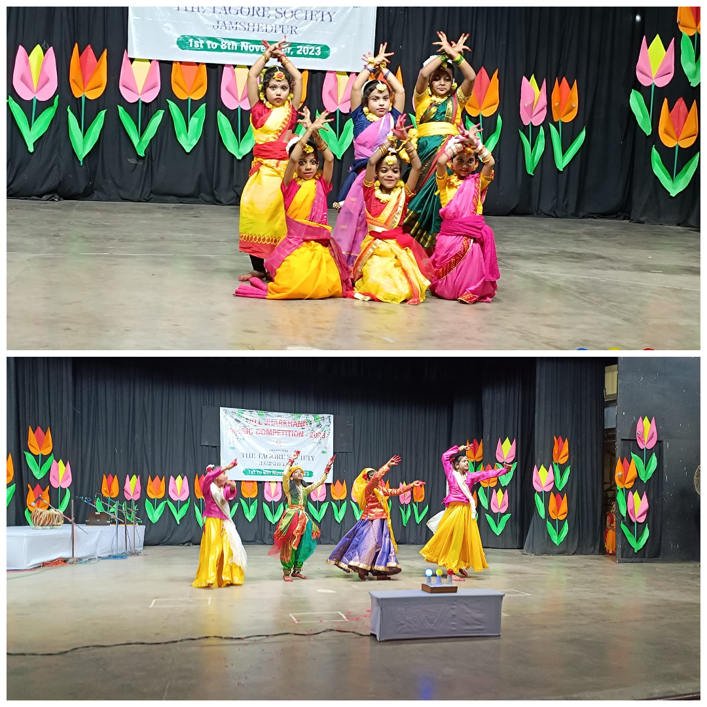 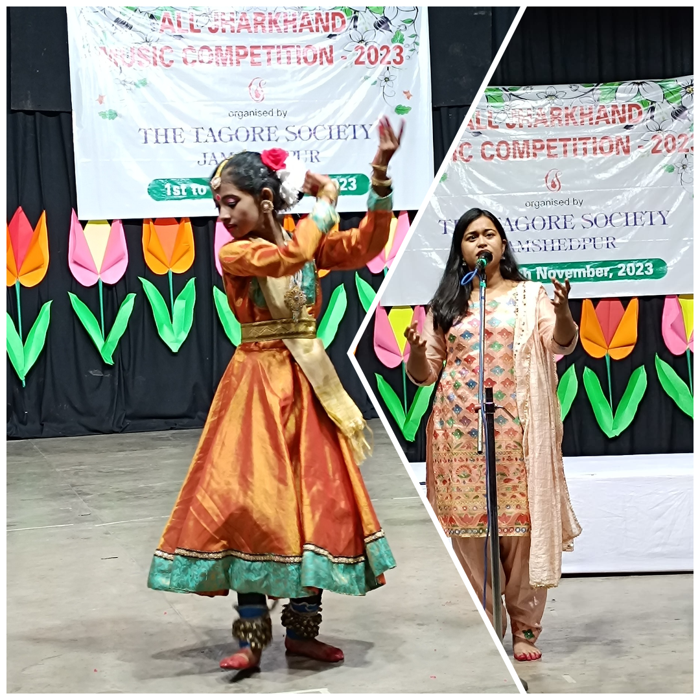